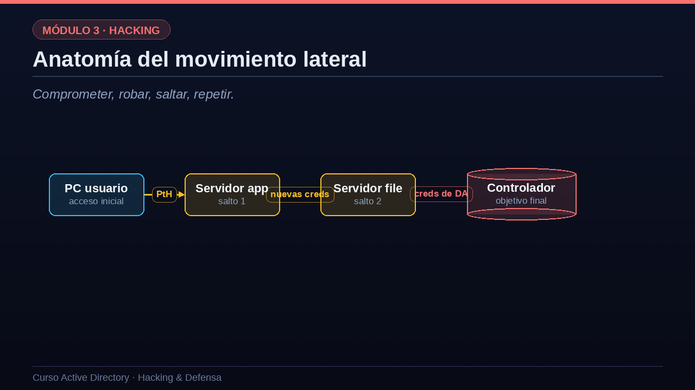

01Técnicas de ejecución remota
Con credenciales válidas, varias vías para ejecutar código en otro equipo.
Cuando el atacante ya tiene unas credenciales válidas, necesita una forma de ejecutar código en el equipo remoto. Hay varias técnicas, y elegir una u otra es una cuestión de sigilo. PsExec es la clásica: crea un servicio en el equipo remoto a través de SMB; es muy fiable pero hace bastante ruido y deja rastro. La ejecución por WMI, con herramientas como wmiexec, es algo más discreta. WinRM, la gestión remota de Windows por el puerto cinco mil novecientos ochenta y cinco, es muy habitual en entornos modernos. El abuso de DCOM, mediante objetos COM remotos, es de los más silenciosos. Y la creación de tareas programadas en el equipo remoto es otra vía común. Todas estas técnicas usan funciones legítimas de administración de Windows, lo que las hace difíciles de distinguir del trabajo normal de un administrador. Esa es, precisamente, su gracia y el reto para la defensa.
| Técnica | Mecanismo | Ruido |
|---|---|---|
| PsExec | Crea un servicio remoto por SMB | Alto |
| WMI / wmiexec | Ejecución vía WMI | Medio |
| WinRM / PowerShell | Gestión remota (puerto 5985) | Medio |
| DCOM | Objetos COM remotos | Bajo |
| Tareas programadas | Crea una tarea en el equipo remoto | Medio |
02Anatomía del movimiento lateral
Comprometer, robar, saltar, repetir.
Veamos la anatomía completa del movimiento lateral, que sigue un patrón rítmico: comprometer, robar, saltar, repetir. El atacante parte del equipo de un usuario, su acceso inicial. Vuelca la memoria y roba una credencial, con la que ejecuta un Pass-the-Hash para saltar a un servidor de aplicaciones. Una vez en ese servidor, vuelve a volcar la memoria y encuentra credenciales nuevas, quizá las de un administrador que había iniciado sesión allí, y salta a un servidor de ficheros. Allí repite la operación y, por fin, encuentra en memoria las credenciales de un administrador de dominio. Con ellas, da el salto final al controlador. Cada salto es individualmente sencillo; lo peligroso es la cadena. Y fíjate en que todo depende de encontrar, en cada equipo, una credencial más valiosa que la anterior. Por eso el Tier Model, que impide que las credenciales valiosas bajen a equipos de poco valor, corta esta cadena de raíz.

03Escalada local: de usuario a SYSTEM
A veces el salto de privilegios ocurre dentro de un mismo equipo.
No toda la escalada es de dominio; a menudo el atacante necesita primero subir de privilegios dentro del propio equipo, de un usuario limitado a SYSTEM, el máximo nivel local. Hay varias vías habituales. Los servicios mal configurados, por ejemplo con rutas sin comillas o con permisos débiles que permiten reemplazar el binario del servicio por uno malicioso. Los privilegios de token peligrosos, como SeImpersonate, que habilitan toda una familia de ataques conocidos como Potato para llegar a SYSTEM; estos son especialmente relevantes en servidores web y de bases de datos. El software sin parchear, con vulnerabilidades locales conocidas de elevación. Y las credenciales olvidadas en disco: contraseñas escritas en scripts, en ficheros de configuración o en el registro de Windows. Herramientas como WinPEAS automatizan la búsqueda de todas estas debilidades. Una vez que el atacante es SYSTEM en un equipo, puede volcar credenciales y continuar el movimiento lateral.
- Servicios mal configuradosRutas sin comillas o permisos débiles sobre binarios de servicio.
- Privilegios de token peligrososSeImpersonate permite ataques tipo 'Potato' hasta SYSTEM.
- Software sin parchearVulnerabilidades locales que elevan privilegios.
- Credenciales en discoContraseñas en scripts, ficheros de configuración o el registro.
04Movimiento lateral en la práctica
Veámoslo con comandos. Primero, el atacante comprueba el alcance de la credencial robada: con CrackMapExec prueba el hash de admin guion srv contra una lista de objetivos y descubre que es administrador en SRV guion APP y en SRV guion FILE. El mensaje Pwned confirma el acceso. A continuación salta a uno de ellos, SRV guion FILE, usando wmiexec con la opción de pasar el hash, sin necesidad de contraseña. Obtiene una shell como administrador del equipo, lo verifica con whoami. Y entonces, al volcar de nuevo la memoria de esa máquina, aparece la joya: las credenciales de admin guion dom, una cuenta de administrador de dominio que había iniciado sesión en ese servidor. El atacante acaba de conseguir, por el camino, la llave del reino. Este encadenamiento, repetido de forma casi mecánica, es como caen la mayoría de los dominios en las intrusiones reales.
# Comprobar en qué equipos funciona una credencial crackmapexec smb targets.txt -u admin_srv -H 9f1c...e4d2 [+] SRV-APP (Pwn3d!) [+] SRV-FILE (Pwn3d!) # Ejecutar comandos y volcar credenciales en el salto wmiexec.py -hashes :9f1c...e4d2 admin_srv@SRV-FILE C:\> whoami -> srv-file\administrator Nuevas credenciales en memoria: admin_dom (Domain Admin)
05Romper la cadena: defensa en profundidad
¿Cómo se rompe esta cadena? Con defensa en profundidad, en dos frentes. En detección, hay que vigilar la ejecución remota entre equipos mediante PsExec, WMI o WinRM, especialmente cuando ocurre en patrones anómalos; detectar logons inusuales, como una cuenta que aparece de pronto en equipos donde nunca había estado; y desplegar soluciones EDR, que detectan el volcado de LSASS y el uso de herramientas conocidas como Mimikatz. En prevención, el Tier Model vuelve a ser la medida reina, porque impide que las credenciales valiosas lleguen a equipos de poco valor donde el atacante pueda robarlas. La segmentación de red y los cortafuegos de host que bloquean el tráfico SMB directo entre estaciones de trabajo dificultan enormemente los saltos. Y LAPS, al poner una contraseña de administrador local distinta en cada equipo, elimina la reutilización que hace posible Pass-the-Hash entre máquinas. Ninguna medida basta por sí sola; es su combinación la que frena al atacante.
Detección
- Vigilar PsExec/WMI/WinRMEjecución remota anómala entre equipos.
- Logons inusualesUna cuenta que aparece en equipos donde nunca estuvo.
- EDRDetecta el volcado de LSASS y herramientas conocidas.
Prevención
- Tier ModelLas credenciales valiosas no bajan de nivel.
- Segmentación y firewall de hostBloquear SMB entre estaciones de trabajo.
- LAPSContraseña de admin local única por equipo: no hay reutilización.
06Resumen de la lección
Recapitulemos. El movimiento lateral se apoya en técnicas de ejecución remota legítimas, como PsExec, WMI, WinRM y DCOM, que son difíciles de distinguir del trabajo normal de administración. Sigue un ritmo característico: comprometer un equipo, robar sus credenciales, saltar al siguiente y repetir, buscando cada vez una credencial más valiosa. Por el camino, la escalada local lleva al atacante de usuario a SYSTEM aprovechando servicios mal configurados, privilegios de token o secretos olvidados en disco. Y la defensa eficaz es en profundidad: Tier Model y LAPS para cortar la reutilización, segmentación para frenar los saltos, y EDR más detección de anomalías para verlo cuando ocurre. En la próxima lección llegamos al clímax del ataque: dominar el dominio con DCSync, Golden Ticket y persistencia. Nos vemos en la lección trece.
- Ejecución remota legítimaPsExec, WMI, WinRM y DCOM: difíciles de distinguir del uso normal.
- El ritmo del movimiento lateralComprometer, robar credenciales, saltar y repetir.
- Escalada localDe usuario a SYSTEM con servicios, tokens o secretos en disco.
- Defensa en profundidadTier Model, LAPS, segmentación, EDR y detección de anomalías.